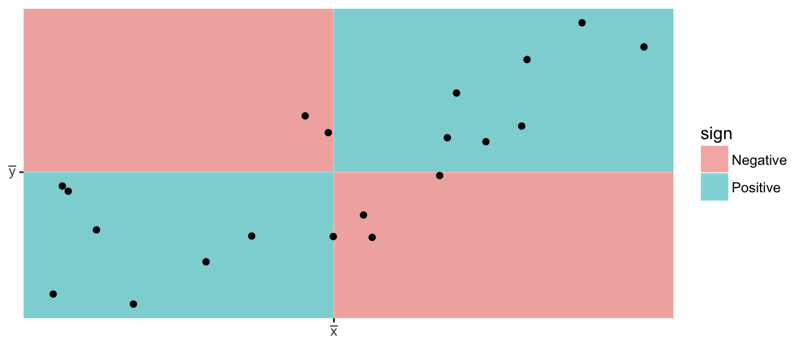
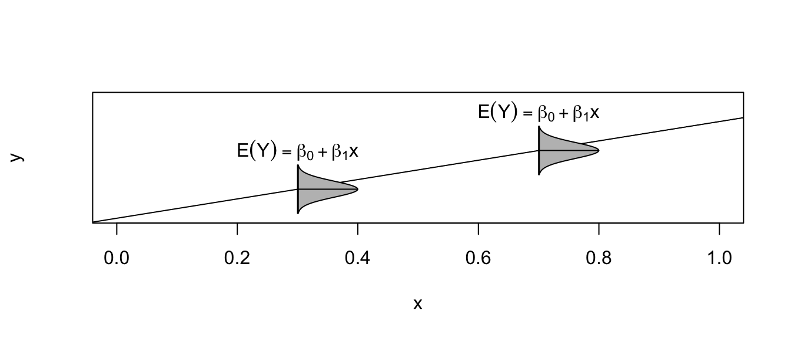
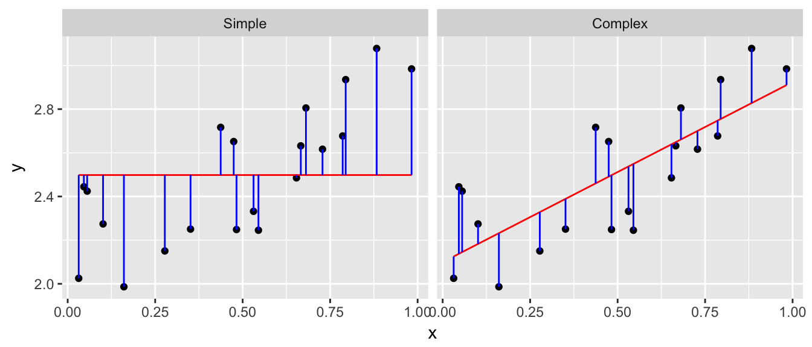
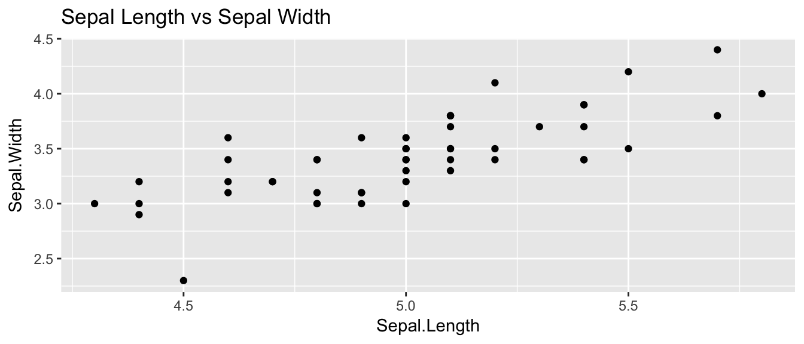
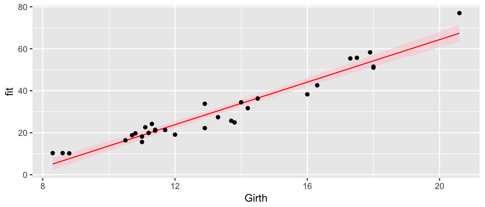
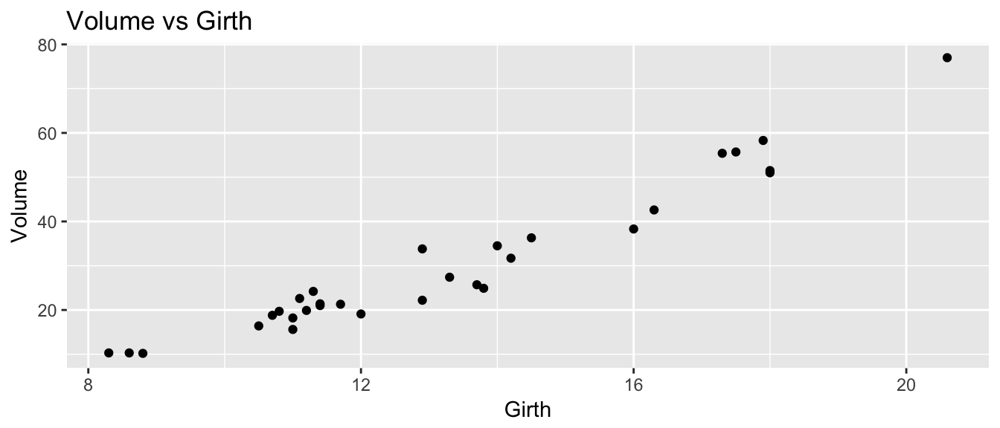
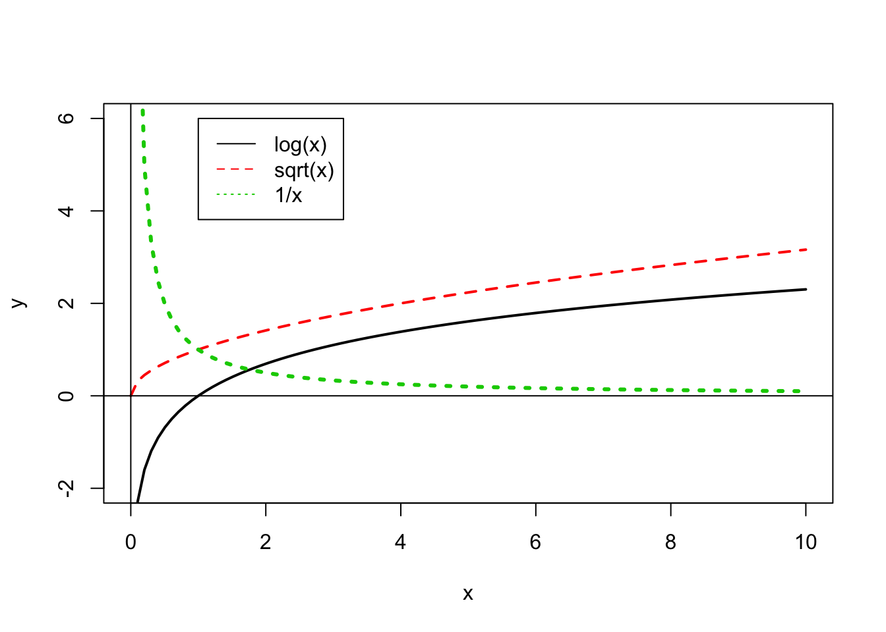
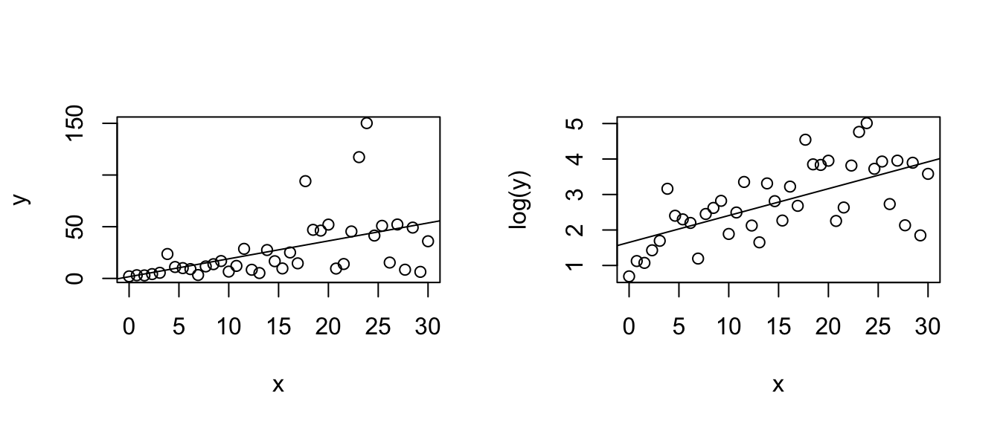
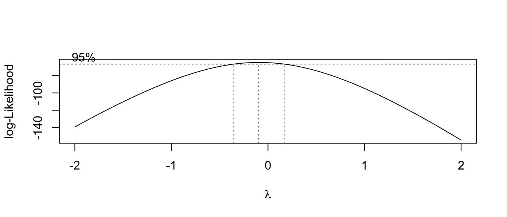

Chapter 10 Regression
library(ggplot2)
library(dplyr)
library(ggfortify) # for diagnostic plots in ggplot2 via autoplot()We continue to want to examine the relationship between a predictor variable and a response but now we consider the case that the predictor is continuous and the response is also continuous. In general we are going to be interested in finding the line that best fits the observed data and determining if we should include the predictor variable in the model.

10.1 Pearson’s Correlation Coefficient
We first consider Pearson’s correlation coefficient, which is a statistics that measures the strength of the linear relationship between the predictor and response. Consider the following Pearson’s correlation statistic \[r=\frac{\sum_{i=1}^{n}\left(\frac{x_{i}-\bar{x}}{s_{x}}\right)\left(\frac{y_{i}-\bar{y}}{s_{y}}\right)}{n-1}\] where \(x_{i}\) and \(y_{i}\) are the x and y coordinate of the \(i\)th observation. Notice that each parenthesis value is the standardized value of each observation. If the x-value is big (greater than \(\bar{x}\)) and the y-value is large (greater than \(\bar{y}\)), then after multiplication, the result is positive. Likewise if the x-value is small and the y-value is small, both standardized values are negative and therefore after multiplication the result is positive. If a large x-value is paired with a small y-value, then the first value is positive, but the second is negative and so the multiplication result is negative.
The following are true about Pearson’s correlation coefficient: 1. \(r\) is unit-less because we have standardized the \(x\) and \(y\) values. 2. \(-1\le r\le1\) because of the scaling by \(n-1\) 3. A negative \(r\) denotes a negative relationship between \(x\) and \(y\), while a positive value of \(r\) represents a positive relationship. 4. \(r\) measures the strength of the linear relationship between the predictor and response.

10.2 Model Theory
To scatterplot data that looks linear we often want to fit the model \[y_{i}=\beta_{0}+\beta_{1}x_{i}+\epsilon_{i}\;\;\;\textrm{where }\epsilon_{i}\stackrel{iid}{\sim}N\left(0,\sigma^{2}\right)\] where
| Parameter | Name | Interpretation |
|---|---|---|
| \(\beta_0\) | y-intercept | Height of regression line at \(x=0\) |
| \(\beta_1\) | slope | How much the line rises for a \(1\) unit increase in \(x\). |
| \(\sigma\) | Standard Deviation | The “typical” distance from a point to the regression line |
The assumptions of this model are:
- The relationship between the predictor and response is actually linear.
- The error terms come from a normal distribution.
- The variance of the errors is the same for every value of x (homoscedasticity).
- The error terms are independent.
Under this model, the expected value of an observation with covariate \(X=x\) is \(E\left(Y\,|\,X=x\right)=\beta_{0}+\beta_{1}\) and a new observation has a standard deviation of \(\sigma\) about the line.

Given this model, how do we find estimates of \(\beta_{0}\) and \(\beta_{1}\)? In the past we have always relied on using some sort of sample mean, but it is not obvious what we can use here. Instead of a mean, we will use the values of \(\hat{\beta}_{0}\) and \(\hat{\beta}_{1}\) that minimize the sum of squared error (SSE) where \[\begin{aligned} \hat{y}_{i} &= \hat{\beta}_{0}+\hat{\beta}_{1}x_{i} \\ e_{i} &= y_{i}-\hat{y}_{i} \\ SSE &= \sum_{i=1}^{n}e_{i}^{2} \end{aligned}\]

Fortunately there are simple closed form solutions for \(\hat{\beta}_{0}\) and \(\hat{\beta}_{1}\) \[\begin{aligned} \hat{\beta}_{1} &= r\,\left(\frac{s_{y}}{s_{x}}\right)\\ \hat{\beta_{0}} &= \bar{y}-\hat{\beta}_{1}\bar{x} \end{aligned}\]
and using these estimates several properties can be shown
- \(\hat{\beta}_{0}\) and \(\hat{\beta}_{1}\) are the intercept and slope values that minimize SSE.
- The regression line goes through the center of mass of the data (\(\bar{x}\),\(\bar{y}\)).
- The sum of the residuals is 0. That is: \(\sum e_{i}=0\).
- \(\hat{\beta}_{0}\) and \(\hat{\beta}_{1}\) are unbiased estimators of \(\beta_{0}\) and \(\beta_{1}\).
We are also interested in an estimate of \(\sigma^{2}\) and we will use our usual estimation scheme of \[\begin{aligned} \hat{\sigma}^{2} &= \frac{1}{n-2}\sum_{i=1}^{n}\left(y_{i}-\hat{y}_{i}\right)^{2} = \frac{\sum_{i=1}^{n}e_{i}^{2}}{n-2} = \frac{SSE}{n-2} = MSE \end{aligned}\]
where the \(-2\) comes from having to estimate \(\beta_{0}\) and \(\beta_{1}\) before we can estimate \(\sigma^{2}\). As in the ANOVA case, we can interpret \(\sigma\) as the typical distance an observation is from its predicted value.
As always we are also interested in knowing the estimated standard deviation (which we will call Standard Error) of the model parameters \(\beta_{0}\) and \(\beta_{1}\) and it can be shown that \[StdErr\left(\hat{\beta}_{0}\right)=\hat{\sigma}\sqrt{\frac{1}{n}+\frac{\bar{x}^{2}}{S_{xx}}}\] and \[StdErr\left(\hat{\beta}_{1}\right)=\hat{\sigma}\sqrt{\frac{1}{S_{xx}}}\] where \(S_{xx}=\sum\left(x_{i}-\bar{x}\right)^{2}\). These intervals can be used to calculate confidence intervals for \(\beta_{0}\) and \(\beta_{1}\) using the formulas: \[\hat{\beta}_{i}\pm t_{n-2}^{1-\alpha/2}StdErr\left(\hat{\beta}_{i}\right)\]
Again we consider the iris dataset that is available in R. I wish to examine the relationship between sepal length and sepal width in the species setosa.
setosa <- iris %>% filter( Species == 'setosa' ) # Just setosa!
ggplot(setosa, aes(x=Sepal.Length, y=Sepal.Width)) +
geom_point() +
labs(x="Sepal Length", y="Sepal Width", title='Setosa Irises') 
# Do all the crazy calculations "By Hand!"
x <- setosa$Sepal.Length
y <- setosa$Sepal.Width
n <- length(x)
r <- sum( (x-mean(x))/sd(x) * (y-mean(y))/sd(y) ) / (n-1)
b1 <- r*sd(y)/sd(x)
b0 <- mean(y) - b1*mean(x)
cbind(r, b0, b1)## r b0 b1
## [1,] 0.7425467 -0.5694327 0.7985283yhat <- b0 + b1*x
resid <- y - yhat
SSE <- sum( resid^2 )
s2 <- SSE/(n-2)
s2## [1] 0.06580573Sxx <- sum( (x-mean(x))^2 )
stderr.b0 <- sqrt(s2) * sqrt( 1/n + mean(x)^2 / Sxx)
stderr.b1 <- sqrt(s2) * sqrt(1 / Sxx )
cbind(stderr.b0, stderr.b1)## stderr.b0 stderr.b1
## [1,] 0.5217119 0.1039651t.star <- qt(.975, df=n-2)
c(b0-t.star*stderr.b0, b0+t.star*stderr.b0)## [1] -1.6184048 0.4795395c(b1-t.star*stderr.b1, b1+t.star*stderr.b1)## [1] 0.5894925 1.0075641Of course, we don’t want to have to do these calculations by hand. Fortunately statistics packages will do all of the above calculations. In R, we will use lm() to fit a linear regression model and then call various accessor functions to give me the regression output I want.
cor( setosa$Sepal.Width, setosa$Sepal.Length )## [1] 0.7425467model <- lm(Sepal.Width ~ Sepal.Length, data=setosa)
coef(model)## (Intercept) Sepal.Length
## -0.5694327 0.7985283confint(model)## 2.5 % 97.5 %
## (Intercept) -1.6184048 0.4795395
## Sepal.Length 0.5894925 1.0075641In general, most statistics programs will give a table of output summarizing a regression and the table is usually set up as follows:
| Coefficient | Estimate | Std. Error | t-stat | p-value |
|---|---|---|---|---|
| Intercept | \(\hat{\beta}_{0}\) | StdErr\((\hat{\beta}_0)\) | \(t_{0}=\frac{\hat{\beta}_0}{StdErr(\hat{\beta}_0)}\) | \(2*P(T_{n-2}>\vert t_0 \vert )\) |
| Slope | \(\hat{\beta}_{1}\) | StdErr\((\hat{\beta}_1)\) | \(t_{1}=\frac{\hat{\beta}_1}{StdErr(\hat{\beta}_1)}\) | \(2*P(T_{n-2}>\vert t_1 \vert )\) |
This table is printed by R by using the summary() function:
model <- lm(Sepal.Width ~ Sepal.Length, data=setosa)
summary(model)##
## Call:
## lm(formula = Sepal.Width ~ Sepal.Length, data = setosa)
##
## Residuals:
## Min 1Q Median 3Q Max
## -0.72394 -0.18273 -0.00306 0.15738 0.51709
##
## Coefficients:
## Estimate Std. Error t value Pr(>|t|)
## (Intercept) -0.5694 0.5217 -1.091 0.281
## Sepal.Length 0.7985 0.1040 7.681 6.71e-10 ***
## ---
## Signif. codes: 0 '***' 0.001 '**' 0.01 '*' 0.05 '.' 0.1 ' ' 1
##
## Residual standard error: 0.2565 on 48 degrees of freedom
## Multiple R-squared: 0.5514, Adjusted R-squared: 0.542
## F-statistic: 58.99 on 1 and 48 DF, p-value: 6.71e-10The first row is giving information about the y-intercept. In this case the estimate is \(-0.5694\) and the standard error of the estimate is \(0.5217\). The t-statistic and associated p-value is testing the hypotheses: \(H_{0}:\,\beta_{0}=0\) vs \(H_{a}:\,\beta_{0}\ne0\). This test is not usually of much interest. However because the equivalent test in the slope row testing \(\beta_{1}=0\) vs \(\beta_{1}\ne0\), the p-value of the slope row is very interesting because it tells me if I should include the slope variable in the model. If \(\beta_{1}\) could be zero, then we should drop the predictor from our model and use the simple model \(y_{i}=\beta_{0}+\epsilon_{i}\) instead.
There are a bunch of other statistics that are returned by summary(). The Residual standard error is just \(\hat{\sigma}=\sqrt{MSE}\) and the degrees of freedom for that error is also given. The rest are involved with the ANOVA interpretation of a linear model.
10.2.1 Anova Interpretation
Just as in the ANOVA analysis, we really have a competition between two models. The full model \[y_{i}=\beta_{0}+\beta_{1}x+\epsilon_{i}\] vs the simple model where x does not help predict \(y\) \[y_{i}=\beta_0+\epsilon_{i}\] Notice this is effectively forcing the regression line to be flay and I could have written the model using \(\beta_{0}=\mu\) to try to keep our notation straight. If I were to look at the simple model I would use \(\bar{y}=\hat{\beta}_0\) as the predicted value of \(y\) for any value of \(x\) and my Sum of Squared Error in the simple model will be \[SSE_{simple} = \sum_{i=1}^{n}\left(y_{i}-\hat{y}_{i}\right)^{2} = \sum_{i=1}^{n}\left(y_{i}-\hat{\beta}_0\right)^{2}\] and the appropriate Mean Squared Error is
\[MSE_{simple}=\frac{1}{n-1}\sum\left(y_{i}-\hat{\beta}_0\right)^{2}\]
We can go through the same sort of calculations for the full complex model and get \[SSE_{complex} = \sum_{i=1}^{n}\left(y_{i}-\hat{y}_{i}\right)^{2} = \sum_{i=1}^{n}\left(y_{i}-\left(\hat{\beta}_{0}+\hat{\beta}_{1}x_{i}\right)\right)^{2}\] Notice that \(\hat{\beta}_0\) term is in both models, but will not be numerically the same. Next we have \[MSE_{complex}=\frac{1}{n-2}\sum_{i=1}^{n}\left(y_{i}-\left(\hat{\beta}_{0}+\hat{\beta}_{1}x_{i}\right)\right)^{2}\] Just as in the AVOVA analysis, if we often like to look at the difference between \[SSE_{simple}-SSE_{comples}=SSE_{diff}\] and think of this quantity as the amount of variability that is explained by adding the slope parameter to the model. Just as in the AVOVA case we’ll calculate \[MSE_{diff}=SSE_{diff}/df_{diff}\] where \(df_{diff}\) is the number of parameters that we added to the simple model to create the complex one. In the simple linear regression case, \(df_{diff}=1\).
Just as in the ANOVA case, we will calculate an f-statistic to test the null hypothesis that the simple model suffices vs the alternative that the complex model is necessary. The calculation is \[f=\frac{MSE_{diff}}{MSE_{complex}}\] and the associated p-value is \(P\left(F_{1,n-2}>f\right)\). Notice that this test is exactly testing if \(\beta_{1}=0\) and therefore the p-value for the F-test and the t-test for \(\beta_{1}\) are the same. It can easily be shown that \(t_{1}^{2}=f\).
The Analysis of Variance table looks the same as what we have seen, but now we recognize that the rows actually represent the complex and simple models and the difference between them.
| Source | df | Sum Sq | MS | F | p-value |
|---|---|---|---|---|---|
| Difference | \(1\) | \(SSE_{diff}\) | \(MSE_{diff} = SSE_{diff}/1\) | \(f = \frac{MSE_{diff}}{MSE_{complex}}\) | \(P(F_{1,n-2} > f)\) |
| Complex | \(n-2\) | \(SSE_{complex}\) | \(MSE{complex} = SSE_{complex}/(n-2\) | ||
| Simple | \(n-1\) | \(SSE_{simple}\) |
As usual, the ANOVA table for the regression is available in R using the anova() command.
model <- lm(Sepal.Width ~ Sepal.Length, data=setosa)
anova(model)## Analysis of Variance Table
##
## Response: Sepal.Width
## Df Sum Sq Mean Sq F value Pr(>F)
## Sepal.Length 1 3.8821 3.8821 58.994 6.71e-10 ***
## Residuals 48 3.1587 0.0658
## ---
## Signif. codes: 0 '***' 0.001 '**' 0.01 '*' 0.05 '.' 0.1 ' ' 1But we notice that R chooses not to display the row corresponding to the simple model.
I could consider \(SSE_{simple}\) as a baseline measure of the amount of variability in the data. It is interesting to look at how much of that baseline variability has been explained by adding the additional parameter to the model. Therefore we’ll define the ratio \(R^{2}\) as: \[R^{2}=\frac{SSE_{diff}}{SSE_{simple}}=\frac{SSE_{simple}-SSE_{complex}}{SSE_{simple}}=r^{2}\] where \(r\) is Pearson’s Correlation Coefficient. \(R^{2}\) has the wonderful interpretation of the percent of variability in the response variable that can be explained by the predictor variable \(x\).
10.2.2 Confidence Intervals vs Prediction Intervals
There are two different types of questions that we might ask about predicting the value for some x-value \(x_{new}\).
We might be interested in a confidence interval for regression line. For this question we want to know how much would we expect the sample regression line move if we were to collect a new set of data. In particular, for some value of \(x\), say \(x_{new}\), how variable would the regression line be? To answer that we have to ask what is the estimated variance of \(\hat{\beta}_{0}+\hat{\beta}_{1}x_{new}\)? The variance of the regression line will be a function of the variances of \(\hat{\beta}_{0}\) and \(\hat{\beta}_{1}\) and thus the standard error looks somewhat reminiscent of the standard errors of \(\hat{\beta}_{0}\) and \(\hat{\beta}_{1}\). Recalling that we defined \(S_{xx}=\sum\left(x_{i}-\bar{x}\right)^{2}\), we have: \[\hat{Var}\left(\hat{\beta}_{0}+\hat{\beta}_{1}x_{new}\right)=\hat{\sigma}^{2}\left(\frac{1}{n}+\frac{\left(x_{new}-\bar{x}\right)^{2}}{S_{xx}}\right)\] and therefore its \(StdErr(\hat{\beta}_{0}+\hat{\beta}_{1}x_{new})\) is \[StdErr\left(\hat{\beta}_{0}+\hat{\beta}_{1}x_{new}\right)=\hat{\sigma}\sqrt{\frac{1}{n}+\frac{\left(x_{new}-\bar{x}\right)^{2}}{S_{xx}}}\]
We can use this value to produce a confidence interval for the regression line for any value of \(x_{new}\). \[Estimate \pm t\;StdErr\left(Estimate\right)\] \[\left(\hat{\beta}_{0}+\hat{\beta}_{1}x_{new}\right) \pm t_{n-2}^{1-\alpha/2}\;\;\hat{\sigma}\sqrt{\frac{1}{n}+\frac{\left(x_{new}-\bar{x}\right)^{2}}{S_{xx}}}\]
the expected value of new observation \(\hat{E}\left(Y\,|\,X=x_{new}\right)\). This expectation is regression line but because the estimated regression line is a function of the data, then the line isn’t the exactly the same as the true regression line. To reflect that, I want to calculate a confidence interval for where the true regression line should be.
I might instead be interested calculating a confidence interval for \(y_{new}\), which I will call a prediction interval in an attempt to keep from being confused with the confidence interval of the regression line. Because we have \[y_{new}=\beta_{0}+\beta_{1}x_{new}+\epsilon_{new}\]
then my prediction interval will still be centered at \(\hat{\beta}_{0}+\hat{\beta}_{1}x_{new}\) but the the uncertainty should be the sum of the uncertainty associated with the estimates of \(\beta_{0}\) and \(\beta_{1}\) and the additional variability associated with \(\epsilon_{new}\). In short, \[\begin{aligned} \hat{Var}\left(\hat{\beta}_{0}+\hat{\beta}_{1}x_{new}+\epsilon\right) &= \hat{Var}\left(\hat{\beta}_{0}+\hat{\beta}_{1}x_{new}\right)+\hat{Var}\left(\epsilon\right) \\ &= \hat{\sigma}^{2}\left(\frac{1}{n}+\frac{\left(x_{new}-\bar{x}\right)^{2}}{S_{xx}}\right)+\hat{\sigma}^{2} \end{aligned}\]
and the \(StdErr\left(\right)\) of a new observation will be
\[StdErr\left(\hat{y}_{new}\right)=\hat{\sigma}\sqrt{1+\frac{1}{n}+\frac{\left(x_{new}-\bar{x}\right)^{2}}{S_{xx}}}\]
So the prediction interval for a new observation will be: \[\left(\hat{\beta}_{0}+\hat{\beta}_{1}x_{new}\right)\pm t_{n-2}^{1-\alpha/2}\;\;\hat{\sigma}\sqrt{1+\frac{1}{n}+\frac{\left(x_{new}-\bar{x}\right)^{2}}{S_{xx}}}\]
To emphasize the difference between confidence regions (capturing where we believe the regression line to lay) versus prediction regions (where new data observations will lay) we note that as the sample size increases, the uncertainty as to where the regression line lays decreases, but the prediction intervals will always contain a minimum width due to the error associated with an individual observation. Below are confidence (red) and prediction (blue) regions for two different sample sizes.

In general, you will not want to calculate the confidence intervals and prediction intervals by hand. Fortunately R makes it easy to calculate the intervals. The function predict() will calculate the point estimates along with confidence and prediction intervals. The function requires the lm() output along with an optional data frame (if you want to predict values not in the original data).
ggplot(setosa, aes(x=Sepal.Length, y=Sepal.Width)) +
geom_point() +
ggtitle('Sepal Length vs Sepal Width')
#fit the regression
model <- lm(Sepal.Width ~ Sepal.Length, data=setosa)
# display the first few predictions
head( predict(model, interval="confidence") )## fit lwr upr
## 1 3.503062 3.427519 3.578604
## 2 3.343356 3.267122 3.419590
## 3 3.183650 3.086634 3.280666
## 4 3.103798 2.991890 3.215705
## 5 3.423209 3.350256 3.496162
## 6 3.742620 3.632603 3.852637# predict at x = 5.0
predict(model,
interval="prediction", # prediction Interval
newdata=data.frame(Sepal.Length = 5.0)) # at x=5## fit lwr upr
## 1 3.423209 2.902294 3.944123We can create a nice graph of the regression line and associated confidence and prediction regions using the following code in R:
# ask for the confidence and prediction intervals
conf.region <- predict(model, interval='confidence')
pred.region <- predict(model, interval='prediction')
# add them to my original data frame
setosa <- setosa %>%
mutate( fit = fitted(model),
conf.lwr = conf.region[,2],
conf.upr = conf.region[,3],
pred.lwr = pred.region[,2],
pred.upr = pred.region[,3])# make a nice plot
ggplot(setosa) +
geom_point( aes(x=Sepal.Length, y=Sepal.Width) ) +
geom_line( aes(x=Sepal.Length, y=fit), col='red' ) +
geom_ribbon( aes(x=Sepal.Length, ymin=conf.lwr, ymax=conf.upr), fill='red', alpha=.4) +
geom_ribbon( aes(x=Sepal.Length, ymin=pred.lwr, ymax=pred.upr), fill='blue', alpha=.4)
It is worth noting that these confidence intervals are all point-wise confidence intervals. If I want to calculate confidence or prediction intervals for a large number of \(x_{new}\) values, then I have to deal with the multiple comparisons issue. Fortunately this is easy to do in the simple linear regression case. Instead of using the \(t_{n-2}^{1-\alpha/2}\) quantile in the interval formulas, we should use \(W=\sqrt{2*F_{1-\alpha,\,2,\,n-2}}\). Many books ignore this issue as does the predict() function in R.
10.3 Extrapolation
The data observed will inform a researcher about the relationship between the x and y variables, but only in the range for which you have data! Below are the winning times of the men’s 1500 meter Olympic race.
data(men1500m, package='HSAUR2')
small <- men1500m %>% filter( year != 1896 ) # Remove the 1896 Olympics
# fit the model and get the prediction interval
model <- lm( time ~ year, data=small )
small <- cbind(small, predict(model, interval='prediction') )
ggplot(small, aes(x=year, y=time, ymin=lwr, ymax=upr)) +
geom_point() +
geom_line( aes(y=fit), col='red' ) +
geom_ribbon( fill='light blue', alpha=.4) +
labs( x='Year', y='Time (s)', title='Winning times of Mens 1500 m' ) +
theme_bw()
If we are interested in predicting the results of the 2008 and 2012 Olympic race, what would we predict?
predict(model,
newdata=data.frame(year=c(2008, 2012)),
interval="prediction")## fit lwr upr
## 1 208.1293 199.3971 216.8614
## 2 206.8451 198.0450 215.6453We can compare the predicted intervals with the time actually recorded by the winner of the men’s 1500m. In Beijing 2008, Rashid Ramzi from Brunei won the event in 212.94 seconds and in London 2012 Taoufik Makhloufi from Algeria won in 214.08 seconds. Both times are within the corresponding prediction intervals, but clearly the linear relationship must eventually change and therefore our regression could not possibly predict the winning time of the 3112 race.
predict(model, newdata=data.frame(year=c(3112)), interval="prediction")## fit lwr upr
## 1 -146.2973 -206.7705 -85.8240210.4 Checking Model Assumptions
As in the anova analysis, we want to be able to check the model assumptions. To do this, we will examine the residuals \(e_{i}=y_{i}-\hat{y}_{i}\) for normality using a QQ-plot as we did in ANOVA. To address the constant variance and linearity assumptions we will look at scatterplots of the residuals vs the fitted values \(\hat{y}_{i}\). For the regression to be valid, we want the scatterplot to show no discernible trend. There are two patterns that commonly show up that indicate a violation of the regression assumptions.
set.seed(2233);
par(mfrow=c(1,3));
n <- 20;
x <- seq(0,1,length=n);
data <- data.frame(
Fitted=c(x,x,x),
Residual=c(rnorm(n,0,.25), rnorm(n,(2*x-1)^2-.375, .2), rnorm(n,0,x*.45)),
Type=factor(rep(1:3, each=n), labels=c('No Trend', 'Non-Linear', 'Non-Constant Variance') ));
for(i in 1:3){
index <- 1:n + n*(i-1);
plot(data$Fitted[index], data$Residual[index],
xlab='Fitted', ylab='Residual', main=data$Type[index[1]] );
abline(0,0, lty=2);
}
To illustrate this, we’ll consider the cherry tree dataset that comes with R. The goal will be predicting the volume of lumber produced by a cherry tree of a given diameter. The data are given in a dataset pre-loaded in R called trees.
Step one: Graph the data. The first step in a regression analysis is to graph the data and think about if a linear relationship makes sense.
head(trees) # 3 columns Girth, Height, Volume## Girth Height Volume
## 1 8.3 70 10.3
## 2 8.6 65 10.3
## 3 8.8 63 10.2
## 4 10.5 72 16.4
## 5 10.7 81 18.8
## 6 10.8 83 19.7ggplot(trees, aes(x=Girth, y=Volume)) +
geom_point() +
ggtitle('Volume vs Girth')
Initially, it looks like a line is a pretty good description of this relationship.
Step two: Fit a regression and examine the diagnostic plots.
model <- lm( Volume ~ Girth, data=trees )
autoplot(model, which=c(1,2))
The normality assumption isn’t too bad, but there is a strong trend in the residual plot. The curvature we see in the residual group is present in the original scatterplot, but it is more obvious. At this point I would think about a slightly more complicated model, e.g. should we include height in the model or perhaps Girth^2? The implications of both of these possibilities will be explored in STA 571 but for now we’ll just continue using the model we have.
Step three: Plot the data and the regression model.
trees <- cbind( trees, predict(model, interval='confidence') )
head(trees) # now we have the fit, lwr, upr columns## Girth Height Volume fit lwr upr
## 1 8.3 70 10.3 5.103149 2.152294 8.054004
## 2 8.6 65 10.3 6.622906 3.799685 9.446127
## 3 8.8 63 10.2 7.636077 4.896577 10.375578
## 4 10.5 72 16.4 16.248033 14.156839 18.339228
## 5 10.7 81 18.8 17.261205 15.235884 19.286525
## 6 10.8 83 19.7 17.767790 15.774297 19.761284ggplot(trees, aes(x=Girth)) +
geom_ribbon( aes( ymin=lwr, ymax=upr), alpha=.4, fill='pink' ) +
geom_line( aes(y=fit), color='red') +
geom_point(aes(y=Volume)) 
In this graph we see that we underestimate the volume for small girths, overestimate for medium values, and underestimate for large girths. So we see the same pattern of the residuals in this graph as we saw in the residual graph. While the model we’ve selected isn’t as good as it could be, this isn’t horribly bad and might suffice for a first pass
“All models are wrong, but some are useful.” George Box.
Step four: Evaluate the model coefficients.
summary(model)##
## Call:
## lm(formula = Volume ~ Girth, data = trees)
##
## Residuals:
## Min 1Q Median 3Q Max
## -8.065 -3.107 0.152 3.495 9.587
##
## Coefficients:
## Estimate Std. Error t value Pr(>|t|)
## (Intercept) -36.9435 3.3651 -10.98 7.62e-12 ***
## Girth 5.0659 0.2474 20.48 < 2e-16 ***
## ---
## Signif. codes: 0 '***' 0.001 '**' 0.01 '*' 0.05 '.' 0.1 ' ' 1
##
## Residual standard error: 4.252 on 29 degrees of freedom
## Multiple R-squared: 0.9353, Adjusted R-squared: 0.9331
## F-statistic: 419.4 on 1 and 29 DF, p-value: < 2.2e-16confint(model)## 2.5 % 97.5 %
## (Intercept) -43.825953 -30.060965
## Girth 4.559914 5.571799From the summary output, we can see several things:
The intercept term \(\hat{\beta}_{0}\) is significantly different than zero. While we should expect that a tree with zero girth should have zero volume, our model predicts a volume of -36.9, which is obviously ridiculous. I’m not too worried about this because we have no data from trees that small and the intercept is quite the extrapolation from the range of Girth values we actually have. This is primarily being driven by the real relationship having curvature and our model has no curvature in it. So long as we don’t use this model to predict values too far away from our data points, I’m happy.
The slope is statistically significantly positive. We see an estimate an increase of 5 units of Volume for every 1 unit increase in Girth.
The estimate \(\hat{\sigma}\) is given by the residual standard error and is 4.252 and that is interpreted as the typical distance away from the regression line.
The R-sq value gives the amount of variability in the data that is explained by the regression line as \(93.5\%\). So the variable Girth explains a huge amount of the variability in volume of lumber a tree produces.
Finally, the F-test is comparing the complex vs the simple model, which in this case, reduces to just testing if the slope term, \(\beta_{1}\), could be zero. In simple regression, the F-statistic is the square of the t-statistic for testing the slope. That is, F-statistic = \(419.4 = 20.48^{2}\). The p-values are the same for the two tests because they are testing exactly the same hypothesis.
10.5 Common Problems
10.5.1 Influential Points
Sometimes a dataset will contain one observation that has a large effect on the outcome of the model. Consider the following datasets where the red denotes a highly influential point and the red line is the regression line including the point.

The question of what to do with influential points is not easy to answer. Sometimes these are data points that are a result of lab technician error and should be removed. Sometimes they are the result of an important process that is not well understood by the researcher. It is up to the scientist to figure out which is the case and take appropriate action.
One solution is to run the analysis both with and without the influential point and see how much it affects your inferences.
10.5.2 Transformations
When the normality or constant variance assumption is violated, sometimes it is possible to transform the data to make it satisfy the assumption. Often times count data is analyzed as log(count) and weights are analyzed after taking a square root or cube root transform.

We have the option of either transforming the x-variable or transforming the y-variable or possibly both. One thing to keep in mind, however, is that transforming the x-variable only effects the linearity of the relationship. Transforming the y-variable effects both the linearity and the variance.
set.seed(-838)
par(mfrow=c(1,3))
n <- 40
x <- seq(1,30, length=n);
y <- 2 + 30*exp((30-x)/10) + rnorm(n, sd=20)
y <- abs(y)
plot(x,y); abline(coef(lm(y~x)));
plot(x, log(y)); abline(coef(lm(I(log(y))~x)));
plot(x^(1/3), y); abline(coef(lm(y~I(x^(1/3)))));
mydata <- data.frame(x=x, y=y)Unfortunately it is not always obvious what transformation is most appropriate. The Box-Cox family of transformations for the y-variable is \[ f(y\,|\,\lambda) = \begin{cases} y^{\lambda} & \;\;\textrm{if}\,\,\lambda\ne0\\ \log y & \;\;\textrm{if}\,\,\lambda=0 \end{cases}\] which includes squaring (\(\lambda=2\)), square root (\(\lambda=1/2\)) and as \(\lambda \to 0\) the transformation converges to \(\log y\). (To do this correctly we should define the transformation in a more complicated fashion, but that level of detail is unnecessary here.) The transformation is selected by looking at the profile log-likelihood value of different values of \(\lambda\) and we want to use the \(\lambda\) that maximizes the log-likelihood.
Of course, we also want to use a transformation that isn’t completely obscure and is commonly used in the scientific field, so square roots, reciprocals, and logs are preferred.

str(mydata)## 'data.frame': 40 obs. of 2 variables:
## $ x: num 0 0.769 1.538 2.308 3.077 ...
## $ y: num 2 3.08 2.92 4.17 5.44 ...MASS::boxcox(y~x, data=mydata, plotit=TRUE)
Here we see the resulting confidence interval for \(\lambda\) contains 0, so a \(\log\) transformation would be most appropriate.
Unfortunately there isn’t a matching procedure for deciding how to transform the \(x\) covariate. Usually we spend a great deal of time trying different transformations and see how they affect the scatterplot and using transformations that are common in whatever field the researcher is working in.
In general, deciding on a transformation to use is often a trade-off between statistical pragmatism and interpretability. In cases that a transformation is not possible, or the interpretation is difficult, it is necessary to build more complicated models that are hopefully interpretable. We will explore these issues in great length in STA 571.
10.6 Exercises
Use the following data below to answer the questions below
x 3 8 10 18 23 28 y 14 28 43 62 79 86 Plot the data in a scatter plot. The following code might be useful:
# read in the data p1.data <- data.frame( x = c( 3, 8, 10, 18, 23, 28), y = c(14, 28, 43, 62, 79, 86) ) # make a nice graph library(ggplot2) ggplot(p1.data, aes(x=x, y=y)) + geom_point()We will first calculate the regression coefficients and their estimated standard deviations by hand (mostly).
- Use R to confirm that that the following summary statistics are correct:
\(\bar{x}=15\) \(s_x=9.59\) \(S_{xx}=460\) \(\bar{y}=52\) \(s_y=28.59\) \(r = 0.9898\) Using the above statistics, by hand calculate the estimates \(\hat{\beta}_{0}\) and \(\hat{\beta}_{1}\).
For each data point, by hand calculate the predicted value \(\hat{y}_{i}=\hat{\beta}_{0}+\hat{\beta}_{1}x_{i}\).
For each data point, by hand calculate the estimated error term \(\hat{\epsilon}_{i}=y_{i}-\hat{y}_{i}\).
Calculate the MSE for the complex model. Using the MSE, what is \(\hat{\sigma}\)?
By hand, calculate the estimated standard deviation (which is often called the standard error) of \(\hat{\beta}_{0}\) and \(\hat{\beta}_{1}\).
Use the R function
lm()to fit a regression to these data.Using the
predict()function, confirm your hand calculation of the \(\hat{y}_{i}\) values.Using the
resid()function, confirm your hand calculation of the \(\hat{\epsilon}_{i}\) terms.Using the
summary()function, confirm your hand calculations of \(\hat{\beta}_{0}\) and \(\hat{\beta}_{1}\) and their standard errors.
Again using R’s built in functions, give a 95% confidence interval for \(\beta_{1}\).
Using the appropriate R output, test the hypothesis \(H_{0}:\;\beta_{1}=0\) versus the alternative \(H_{a}:\;\beta_{1} \ne 0\).
Give the R^{2} value for this regression.
What is the typical distance to the regression line?
Create a nice graph of the regression line and the confidence interval for the true relationship using the following code:
# make a nice graph ggplot(p1.data, aes(x=x, y=y)) + geom_point() + geom_smooth(method='lm')Often I want to create the confidence region myself (perhaps to use a prediction interval instead of a confidence interval), and we could use the following code:
library(dplyr) model <- lm( y ~ x, data=p1.data ) p1.data <- p1.data %>% mutate( yhat = predict(model), lwr = predict(model, interval='confidence')[,2], upr = predict(model, interval='confidence')[,3] ) # make a nice graph ggplot(p1.data, aes(x=x)) + geom_ribbon( aes(ymin=lwr, ymax=upr), fill='pink', alpha=.2 ) + geom_line( aes( y=yhat), color='green' ) + geom_point( aes( y=y ), color='black' )
Olympic track and field records are broken practically every Olympics. The following is output comparing the gold medal winning performance in the men’s long jump (in inches) versus the years 00 to 84. (In this data set, the year 00 represents 1900, and 84 represents 1984. This is a pre Y2K dataset.) There were \(n=19\) Olympic games in that period.
Fill in the blanks in the following summary and anova tables:
Summary:
Coefficients Estimate Std Error t-value $Pr(> (Intercept) 283.45 4.28 < 2e-16 Year 0.613 0.0841 7.289 1.27e-06 Residual Standard Error = \(\;\;\;\;\;\;\;\;\;\;\) R-sq = \(\;\;\;\;\;\;\;\;\;\;\) Analysis of Variance:
Source df Sum Sq Mean Sq F-value Pr(>F) Year Residuals 95.19 Total 18 6673.2
Ott & Longnecker 11.45&47 - In the preliminary studies of a new drug, a pharmaceutical firm needs to obtain information on the relationship between the dose level and potency of the drug. In order to obtain this information, a total of 18 test tubes are inoculated with a virus culture and incubated for an appropriate period of time. Three test tubes are randomly assigned to each of 6 different dose levels. The 18 test tubes are then injected with the randomly assigned dose level of the drug. the measured response is the protective strength of the drug against the virus culture. Due to a problem with a few of the test tubes, only 2 responses were obtained for dose levels 4,8, and 16. The data are:
Dose 2 2 2 4 4 8 8 16 16 16 32 32 64 64 64 Response 5 7 3 10 14 15 17 20 21 19 23 29 28 31 30 - We will first fit a regression model to the raw data.
- Plot the data and comment on the relationship between the covariate and response.
- Fit a linear regression model to these data using the lm() function.
- Examine the plot of the residuals vs fitted values. Does there appear to be a problem? Explain.
- Often in drug evaluations, a logarithmic transformation of the dose level will yield a linear relationship between the response variable and the independent variable. Let \(x_{i}=\log\left(dose_{i}\right)\) (where log is the natural log). Notice that because the constant variance assumption seems to be met, I don’t wish to transform \(y\).
- Plot the response of the drug vs the natural log of the dose levels. Does it appear that a linear model is appropriate?
- Fit the linear regression model to these data.
- From a plot of the residuals vs the fitted values, does the linear model seem appropriate?
- Examine the QQplot of the residuals vs the theoretical normal quantiles. Does the normality assumption appear to be violated? Also perform a Shapiro-Wilks test on the residuals to test of a statistically significant difference from normality. Comment on these results.
- What is change in the response variable for every one unit change in log(dose)?
- Give a \(95\%\) confidence interval for the y-intercept and slope parameters. Is the log(dose) level a statistically significant predictor of the response?
- We will first fit a regression model to the raw data.
10.7 Contingency Tables
library(ggplot2)
library(dplyr)
library(tidyr)We are often interested in experiments and studies where the response variable is categorical and so is the explanatory.
Treat plots with either Type A or Type B insecticides and after 2 weeks observe if the plots are infested or not infested with some insect.
Using survey data, we would like to investigate if there is a relationship between Gender and Political Party affiliation. (Are women more likely to be Democrates?)
Are children that are born second or third (or more!) more likely to be gay than the firstborn child?
We will be interested in testing the null hypothesis of “No association” between the explanatory and response variable.
We will have two questions:
What statistic could be calculated from the observed data to measure how far the observed data is from the null hypothesis?
Given the statistic in part 1, how should it vary from sample to sample assuming the null hypothesis (no difference in treatments) is true?
10.8 Expected Counts
We will develope our ideas using a subsample of data from surveys of undergraduate students in an Introductory statistics course. We will utilize \(40\) males and \(40\) females and consider the historical assumption that women should perform better on the verbal part of the SAT rather than the MATH part compared to their male counterparts.
data(StudentSurvey, package='Lock5Data')
StudentSurvey <- StudentSurvey %>%
filter( HigherSAT != '') %>% # remove a student that did not report SAT scores
mutate(HigherSAT = factor(HigherSAT)) %>% # remove the MISSING level from the above student
group_by(Gender) %>% # Only consider the first 40 males
slice(1:40) %>% # and Females... as a first example
select(Gender, HigherSAT) In this example, exactly \(60\%\) of the students had a higher score on the math portion of the SAT than on the verbal. If the null hypothesis is true, then \(60\%\) of the \(40\) males should have a higher Math SAT score than verbal. So under the null, we expect to see \(40 * 0.60 = 24\) males and \(40*0.60=24\) females to have a higher Math SAT than verbal. Similarly we would expect \(40*0.40=16\) males and \(16\) females to score higher on the verbal section. Below is a table that summarizes both our observed data and the expected values under the null hypotheses of no association between superior SAT category with gender.
tab <- mosaic::tally( HigherSAT ~ Gender, data=StudentSurvey, format='count')
descr::CrossTable( tab, expected = TRUE,
prop.r = FALSE, prop.c=FALSE, prop.t=FALSE, prop.chisq = FALSE )## Cell Contents
## |-------------------------|
## | N |
## | Expected N |
## |-------------------------|
##
## ============================
## Gender
## HigherSAT F M Total
## ----------------------------
## Math 23 25 48
## 24 24
## ----------------------------
## Verbal 17 15 32
## 16 16
## ----------------------------
## Total 40 40 80
## ============================Notice that the excected cell counts can be written as \[E_{ij} = \frac{ n_{i,\cdot}}{n} * n_{\cdot, j} = \frac{n_{i,\cdot} n_{\cdot,j}}{n}\] where \(n_{i,\cdot}\) is row total for the \(i\)th row, \(n_{\cdot,j}\) is the column total for the \(j\)th row, and \(n\) is the total number of observations in the table.
This is the first case where our test statistic will not be just plugging in the sample statistic into the null hypothesis. Instead we will consider a test statistic that is more flexible and will handle more general cases (say 3 or more response or treatment groups) Our statistic for assessing how far our observed data is from what we expect under the null hypothesis involves the difference between the observed and the expected for each of the cells, but again we don’t want to just sum the differences, instead will make the differences positive by squaring the differences. Second, a difference of 10 between the observed and expected cell count is very different if the number expected is 1000 than if it is 10, so we will scale the observed difference by dividing by the expected cell count.
We define \[\begin{aligned}X^{2} &= \sum_{\textrm{all ij cells}}\frac{\left(O_{ij}-E_{ij}\right)^{2}}{E_{ij}} \\ &= \frac{(23-24)^2}{24} + \frac{(25-24)^2}{24} + \frac{(17-16)^2}{16} + \frac{(15-16)^2}{16} \\ &= 0.04167 + 0.04167 + 0.0625 + 0.0625 \\ &= 0.20834 \end{aligned}\]
In the next section we will address if this test statistic is large enough to reject the null hypothesis.
Example
Researchers suspected that attack of a plant by one organism induce resistance to subsequent attack by a different organism. The \(47\) individually potted cotton plants were randomly allocated to two groups: infestation by spider mites or no infestation. After two weeks the mites were dutifully removed by a conscientious research assistant, and both groups were inoculated with Verticillium, a fungus that causes Wilt disease.
data(Mites, package="mosaicData")
str(Mites)## 'data.frame': 47 obs. of 2 variables:
## $ treatment: Factor w/ 2 levels "mites","no mites": 1 1 1 1 1 1 1 1 1 1 ...
## $ outcome : Factor w/ 2 levels "no wilt","wilt": 2 2 2 2 2 2 2 2 2 2 ...We will summarize the data into a contingency table that counts the number of plants in each treatment/wilt category.
# Using mosaic's tally function
tab <- mosaic::tally(outcome ~ treatment, data=Mites, # table of outcome by treatment
format='count') # give the raw counts, not percentages
tab## treatment
## outcome mites no mites
## no wilt 15 4
## wilt 11 17From this table we can see that \(28\) out of the \(47\) plants wilted, so the proportion that wilted was \(\frac{28}{47}=0.596\). Therefore under the null hypothesis we would expect that \(59.6\%\) of the \(26\) mite treated plants would have wilted, or \[\left( \frac{28}{47} \right) 26 = 15.49\]
Similar calculations revel the rest of the expected cell counts.
descr::CrossTable( tab, expected = TRUE,
prop.r = FALSE, prop.c=FALSE, prop.t=FALSE, prop.chisq = FALSE )## Cell Contents
## |-------------------------|
## | N |
## | Expected N |
## |-------------------------|
##
## ===================================
## treatment
## outcome mites no mites Total
## -----------------------------------
## no wilt 15 4 19
## 10.5 8.5
## -----------------------------------
## wilt 11 17 28
## 15.5 12.5
## -----------------------------------
## Total 26 21 47
## ===================================Is this data indicative of mites inferring a disease resistance? More formally we are interested in testing \[H_{0}:\: \pi_{w}=\pi_{w|m}\] \[H_{0}:\: \pi_{w}\ne\pi_{w|m}\]
where the relevant parameters are \(\pi_{w}\), the probability that a plant will wilt, and \(\pi_{w|m}\), the probability that a plant will wilt given that it has been treated with mites.
We calculate our test statistic as \[\begin{aligned}X^{2} &= \sum_{\textrm{all ij cells}}\frac{\left(O_{ij}-E_{ij}\right)^{2}}{E_{ij}} \\ &= \frac{\left(15-10.51\right)^{2}}{10.51}+\frac{\left(4-8.49\right)^{2}}{8.49}+\frac{\left(11-15.49\right)^{2}}{15.49}+\frac{\left(17-12.51\right)^{2}}{12.51}\\ &= 1.92+2.37+1.30+1.61 \\ &= 7.20 \end{aligned}\]
If the null hypothesis is true, then this statistic should be small, and a large value of the statistic is indicative of the null hypothesis being incorrect. But how large must the statistic be before we reject the null hypothesis?
10.8.1 Hypothesis Testing
Similarly to the two-sample t-test, we randomly shuffle the treatment assignments and recalculate the statistic many times and examine the sampling distribution of our test statistic, \(X^{2}\).
To do this efficiently, we’ll need a way of easily calculating this test statistic. In a traditional course I would introduce this test by the name of “Pearson’s Chi-squared test” and we can obtain the test statistic using the following code:
# function is chisq.test() and we need to tell it not to do the Yates continuity
# correction and just calculate the test statistic as we've described
chisq.test( table(Mites), correct=FALSE ) # do a Chi-sq test ##
## Pearson's Chi-squared test
##
## data: table(Mites)
## X-squared = 7.2037, df = 1, p-value = 0.007275R is performing the traditional Pearson’s Chi-Squared test which assumes our sample sizes are large enough for several approximations to be good. Fortunately, we don’t care about this approximation to the p-value and will use simulation methods which will be more accurate. In order to use the chisq.test() function to do our calculations, we need to extract the test-statistic from the output of the function. <
# extract the X^2 test statistic from the output
X.sq <- chisq.test( table(Mites), correct=FALSE )$statistic # grab only the test statistic
X.sq## X-squared
## 7.203748Next we wish to repeat our shuffling trick of the treatment labels to calculate the sampling distribution of \(X^{2*}\), which is the distribution of \(X^{2}\) when the null hypothesis of no difference between treatments is true.
Mites.star <- Mites %>% mutate(treatment = mosaic::shuffle(treatment))
table(Mites.star)## outcome
## treatment no wilt wilt
## mites 11 15
## no mites 8 13chisq.test( table(Mites.star), correct=FALSE )$statistic # grab only the test statistic## X-squared
## 0.08559517We see that this code is creating a data frame with a single column called X.squared and next we simulate a large number of times and display the sampling distribution of \(X^{2*}\).
SamplingDist <- mosaic::do(10000)*{
Mites.star <- Mites %>% mutate(treatment = mosaic::shuffle(treatment))
chisq.test( table(Mites.star), correct=FALSE )$statistic
}ggplot( SamplingDist, aes(x=X.squared)) + geom_histogram()
At first glance this seems wrong because it is not a nice looking distribution. However there are only a small number of ways to allocate the treatments labels to the two possible outcomes. Second, for the test statistic we have chosen only the right hand side of the distribution (large values of \(X^{*}\)) would be evidence against the null hypothesis, so we only look at \(X^{2*}>7.20\).
p.value <- SamplingDist %>% summarize( p.value = mean( X.squared >= X.sq ) )
p.value## p.value
## 1 0.0161We see that the p-value is 0.0161 and conclude that there is strong evidence to reject the null hypothesis that the mite treatment does not affect the probability of wilting. That is to say, the probability of observing data as extreme as ours is unlikely to occur by random chance when the null hypothesis is true.
As usual, it is pretty annoying to have to program the permutation test ourselves. Fortunately the chisq.test() function allows us to option to tell it to do a permutation based test. There is an option simulate.p.value which reproduces the simulation test we just performed.
chisq.test( table(Mites), simulate.p.value=TRUE, B=10000 )##
## Pearson's Chi-squared test with simulated p-value (based on 10000
## replicates)
##
## data: table(Mites)
## X-squared = 7.2037, df = NA, p-value = 0.0153Before we had our excellent computers, we would have to compare the observed \(X^{2}\) test statistic to some distribution to determine if it is large enough to be evidence against the null. It can be shown that if the null hypothesis is correct then \(X^{2}\stackrel{\cdot}{\sim}\chi_{1}^{2}\) where this is the Chi-squared distribution with 1 degree of freedom. This is the distribution that the chisq.test() compares against if we don’t tell it to do a permutation based test. Furthermore, even if the null hypothesis is true the test statistic is only approximately normal but that approximation gets better and better as the total sample size increases.
The reason that we compare against a Chi-squared distribution with 1 degree of freedom is because when we shuffle the group labels, we still have the same number of wilted/non-wilted plants as well as the same number of mite/no-mite treated plants. So the row and column totals are identical in all the permuted tables. So once the number of observations in the \((1,1)\) cell is decided, the other three cells are also indirectely determined as well due to the row/column totals being constant regardless of permutation. In the general case with \(R\) rows and \(C\) columns, the number of cells that are not set due to the row/column totals, is \((R-1)(C-1)\).
The asymptotic approximation is usually acceptable if the observed count in each cell is greater than 5. Even then, a slightly better approximation can be obtained by using the Yates’ continuity correction. Typically I will perform the analysis both ways and confirm we get the same inference. If the two methods disagree, I’d trust the permutation method.
Example:
In a study to investigate possible treatments for human infertility, researchers (Harrison, R. F., Blades, M., De Louvois, J., & Hurley, R. (1975). Doxycycline treatment and human infertility. The Lancet, 305(7907), 605-607.) performed a double-blind study and randomly divided 58 patients into two groups. The treatment group (\(n_{t}=30\)) received 100 mg per day of Doxycycline and the placebo group (\(n_{p}=28\)) received a placebo but were unaware that it was a placebo. Within 5 months, the treatment group had 5 pregnancies, while the placebo group had 4. Just looking at the observed vs expected there doesn’t seem to be much difference between the treatments. In fact, due to the discrete nature of the data (i.e. integer values) we can’t imagine data that any closer to the expected value that what we observed. The p-value here ought to be 1! To confirm this we do a similar test as before.
Conceived <- data.frame(
Treatment=c(rep('Doxycyline',30), rep('Placebo',28)),
Outcome=c(rep('Conceived',5), rep('Not Conceived',25),
rep('Conceived',4), rep('Not Conceived',24)))# Use the CrossTable function to generate the Expected Cell values
descr::CrossTable(table(Conceived), expected=TRUE,
prop.r=FALSE, prop.c=FALSE, prop.t=FALSE, prop.chisq=FALSE)## Cell Contents
## |-------------------------|
## | N |
## | Expected N |
## |-------------------------|
##
## ===============================================
## Outcome
## Treatment Conceived Not Conceived Total
## -----------------------------------------------
## Doxycyline 5 25 30
## 4.7 25.3
## -----------------------------------------------
## Placebo 4 24 28
## 4.3 23.7
## -----------------------------------------------
## Total 9 49 58
## ===============================================chisq.test( table(Conceived), simulate.p.value=TRUE, B=10000 )##
## Pearson's Chi-squared test with simulated p-value (based on 10000
## replicates)
##
## data: table(Conceived)
## X-squared = 0.062628, df = NA, p-value = 110.8.2 RxC tables
We next expand this same analysis to consider cases where we have explantory variable with \(C\) levels and the response variable has \(R\) levels, and so the table of observations has \(R\) rows and \(C\) columns.
There was nothing special about the analysis that required only 2x2 tables. Exanding this the expected value for the \(i,j\) cell in the table is still \[E_{ij} = \frac{n_{i\cdot} n_{\cdot j}}{n}\]
As before we define the test statistic as \[\begin{aligned}X^{2} &= \sum_{\textrm{all ij cells}}\frac{\left(O_{ij}-E_{ij}\right)^{2}}{E_{ij}} \end{aligned}\]
If we have sufficient samples sizes in each cell (general rule-of-thumb is greater than 5 per cell), then we could compare this test statistic to a Chi-Squared distribution with \((R-1)(C-1)\) degrees of freedom. \[p.value = Pr( \chi_{(r-1)(c-1)} > X^2 )\]
We consider some data from the American Community Survey, which is a survey administered by the US Census Bureau and given to approximately 3% of all US households. The package Lock5Data has a dataset, ACS, which is a subsample of \(n=1000\) respondents of that 2010 survey. In particular, we want to examine the relationship between race and marriage status. In particular if white respondents are more likely to be married than asian or black (or other) races.
data(ACS, package='Lock5Data')
ACS <- ACS %>%
mutate(Married = ifelse(Married==1, 'Married','Single'))
tab <- mosaic::tally(Married ~ Race, data=ACS)
tab## Race
## Married asian black other white
## Married 37 25 20 355
## Single 33 81 43 406Often I find it is difficult to really understand a table and find a good graph more insightful.
temp <- ACS %>%
group_by(Race, Married) %>%
dplyr::count() %>%
group_by(Race) %>%
mutate(proportion = n/sum(n))
ggplot(temp, aes(x=Race, y=proportion, fill=Married)) +
geom_bar(stat='identity')
# Use the CrossTable function to generate the Expected Cell values
descr::CrossTable(tab, expected=TRUE,
prop.r=FALSE, prop.c=FALSE, prop.t=FALSE, prop.chisq=FALSE)## Cell Contents
## |-------------------------|
## | N |
## | Expected N |
## |-------------------------|
##
## ================================================
## Race
## Married asian black other white Total
## ------------------------------------------------
## Married 37 25 20 355 437
## 30.6 46.3 27.5 332.6
## ------------------------------------------------
## Single 33 81 43 406 563
## 39.4 59.7 35.5 428.4
## ------------------------------------------------
## Total 70 106 63 761 1000
## ================================================Because the cell counts are quite large, the asymptotic approximations should be fine. We will compare the test statistic against a Chi-squared distribution with \((2-1)(4-1)=1*3=3\) degrees of freedom.
1 - pchisq(26.168, df=3)## [1] 8.795319e-06therefore \[p.value = Pr( \chi^2_3 > 26.168 ) = 8.795\textrm{e-}06\]
chisq.test( tab )##
## Pearson's Chi-squared test
##
## data: tab
## X-squared = 26.168, df = 3, p-value = 8.797e-06If we are worried about the sample size begin large enough, we could perform a permutation based test by repeatedly shuffling the Race labels calculating the test statistic and then comparing the observed test statistic \(X^2=26.168\) to the permutation
chisq.test( tab, simulate.p.value=TRUE, B=100000 )##
## Pearson's Chi-squared test with simulated p-value (based on 1e+05
## replicates)
##
## data: tab
## X-squared = 26.168, df = NA, p-value = 2e-05With such a small p-value, we know that we are unlikey to have observed such a large difference in marriage rates among our different races. It appears that white respondents are much more likely to be married than the other races listed, but is there a difference in rates between blacks and asians? What about asian and other?
Just as we wanted to perform an analysis on all pairwise comparisons amongst levels in an ANOVA analysis and control the overall Type I error rate, we will do the same thing but now using the Chi-squared test.
Conceptually we will just perform all possible pairwise tests and then adjust the resulting p-values to control for the number of comparisons.
# We will use a function from the package fifer
# chisq.post.hoc wants the table arranged with the
# factor you want to pairwise contasts as the rows
t( tab ) # transpose the rows and columns## Married
## Race Married Single
## asian 37 33
## black 25 81
## other 20 43
## white 355 406result <- fifer::chisq.post.hoc( t(tab),
test=chisq.test, simulate.p.value=TRUE, B=10000 ) ## Adjusted p-values used the fdr method.result## comparison raw.p adj.p
## 1 asian vs. black 0.0001 0.0003
## 2 asian vs. other 0.0202 0.0366
## 3 asian vs. white 0.3856 0.3856
## 4 black vs. other 0.2758 0.3309
## 5 black vs. white 0.0001 0.0003
## 6 other vs. white 0.0244 0.0366# We really want to get the compact letter display for
# graphing purposes, but there is some annoying details
# that we really ought not have to think about. So lets
# make a little function to handle this stuff.
library(dplyr)
library(stringr)
library(multcompView)
cld.chisq.post.hoc <- function( obj, name ){
p.values <- obj$adj.p # just the p-values
contrasts <- obj$comparison %>%
as.character( ) %>%
str_replace( pattern=fixed(' vs. '), replacement = fixed('-'))
names(p.values) <- contrasts
# finally we can pass p.values into a letters function
my.letters <- multcompView::multcompLetters(p.values)
letter.df <- data.frame( TEMP=names(my.letters$Letters),
.group = my.letters$Letters )
colnames(letter.df)[1] <- name
rownames(letter.df) <- NULL
return(letter.df)
} cld.chisq.post.hoc(result, 'Race')## Race .group
## 1 asian a
## 2 black b
## 3 other b
## 4 white aThere are a number of other questions that I might consider, such as confidence intervals for the proportions married in each race. However, those questions require a few more assumptions about the structure of the data and will be addressed when we study logistic regression.
10.9 Exercises
Is gender independent of education level? A random sample of \(n=395\) people were surveyed and each person was asked to report the highest education level they obtained. The data that resulted from the survey is summarized in the following table:
High School Bachelors Masters Ph.d. Total Female 60 54 46 41 201 Male 40 44 53 57 194 Total 100 98 99 98 395 - Calculate the expected cell counts for each Gender and Degree combination.
- Calculate the \(X^2\) test statistic.
- Calculate the appropriate p-value using the asymptotic approximation.
We consider some data from the American Community Survey, which is a survey administered by the US Census Bureau and given to approximately 3% of all US households. The package
Lock5Datahas a dataset,ACS, which is a subsample of \(n=1000\) respondents of that 2010 survey. In particular, we want to examine the relationship between race and having health insurance.
temp <- ACS %>%
mutate(HealthInsurance = factor(ifelse(HealthInsurance == 1, "Have","None"))) %>%
group_by(Race, HealthInsurance) %>%
dplyr::count() %>%
group_by(Race) %>%
mutate(proportion = n/sum(n))
ggplot(temp, aes(x=Race, y=proportion, fill=HealthInsurance)) +
geom_bar(stat='identity') a) Generate a table summarizing how many respondents of each race has health insurance. b) Test the hypothesis that there is no association between race and having health insurance. using both the asymptotic method and the permutation method. Is your inference the same in both cases? c) Establish which racial groups are different in the proportion of respondents that have health insurance.
a) Generate a table summarizing how many respondents of each race has health insurance. b) Test the hypothesis that there is no association between race and having health insurance. using both the asymptotic method and the permutation method. Is your inference the same in both cases? c) Establish which racial groups are different in the proportion of respondents that have health insurance.